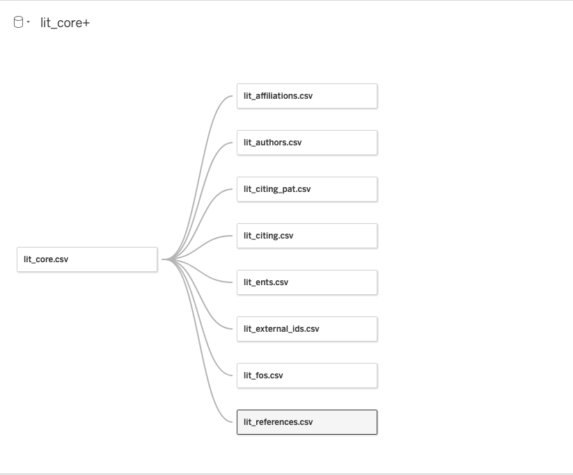

Bahamas Research Repository
Welcome to the Bahamas Biodiversity Research repository. This repository provides open access to public data on scientific and patent publications involving The Bahamas.
This repository was created to provide researchers seeking to carry out research in The Bahamas with a single source of information about existing research.
We also hope to promote wider recognition of research conducted by researchers who have received a research permit through the Bahamas National Research Portal hosted by the The Department of Environmental Planning & Protection. The repository was developed as part of the UNEP/GEF project “Strengthening Access and Benefit Sharing (ABS) in the Bahamas” which supported the development of the National Research Portal.
What’s in the Repository?
The repository contains four types of data:
1. Metadata on any scientific publication published anywhere in the world that mentions The Bahamas.
2. The same data for patent publications world wide.
3. Species occurrence data from the Global Biodiversity Information Facility (GBIF) and a species list. It is important to cite GBIF data so they know that it is being used. Please cite the data as doi: 10.15468/dl.7pcxpj. Citation details are in the folder. GBIF data is quite dynamic and if you would like the latest data visit GBIF Bahamas. The data is also accessible through the highly recommended rgbif package in R.
4. Genetic Sequence Records from INSDC databases listing The Bahamas as the country. The data is extracted through a call to the European Nucleotide Authority API. Only DNA sequences are included at present.
Accessing the Data
A very easy way to explore the data is in a set of interactive online Tableau workbooks.
Access the Scientific Literature
The data on the scientific literature is based on any mention of The Bahamas in the metadata of scientific publications and, where available, the full text. Bear in mind that in some cases a reference to The Bahamas may only appear in the references section of the text or be an incidental passing reference. The data on species mentioned in the texts can be filtered to remove common model organisms and/or restricted to species recorded in The Bahamas in data from the Global Biodiversity Information Facility. Note that taxonomic data on species occurrences in The Bahamas will often be incomplete. However, the data provides an important overview of biodiversity research activity in The Bahamas.

Access the Patent Data
A general overview is provided of patent activity that mentions The Bahamas in the texts in any area of technology. This is followed by a dashboard on species related activity for patent applications and grants that mention The Bahamas. In some cases there is no direct relationship between the species and The Bahamas. In a smaller number of cases there is evidence of direct collection in The Bahamas.

Access DNA Sequence Data
DNA sequence data where The Bahamas appears as the country is downloaded from the European Nucleotide Archive. INSDC databases use the NCBI taxonomy which is popular but is not a taxonomic authority. The data is joined by matching binomial names in NCBI with data from the Global Biodiversity Information Facility (GBIF) backbone taxonomy. Note that this matching may be somewhat crude and should be reviewed.

Download the Data
- You can download the complete data from Zenodo here. New releases will be periodically be made available.
How was the Repository created?
The repository is made up of metadata on scientific and patent publications published anywhere in the world that make reference to the Bahamas. The data is provided through the Lens Scholarly and Patent APIs. The Lens is an open access database that aggregates metadata on scientific publications from OpenAlex (the replacement for Open Academic Graph), Crossref and PubMed as well as full text publications from core.ac.uk. Researchers at Universities and non-profits can sign up for a free account (recommended).
The data that is retrieved from the API passes through a machine learning model that has been trained to identify taxonomic, common names, viruses, uninomial names, country names, locations and habitats. The taxonomic data is joined to the GBIF taxonomy and the geolocation data to geonames for The Bahamas. The taxonomic and common name capture is good. Virus capture is less good because of the diversity of forms of these names. country names and population centre names (labelled GPE for Geopolitical Entities) are pretty good but location names tend to produce false positives (because multiple places may share the same name). We are working to improve this. The machine learning is handled by a medium sized vector model created in spaCy that is trained on over 800,000 texts. We then create a smaller country model that is adapted for place names and other names in The Bahamas. Suggestions on specific names to include for The Bahamas are welcome.
What issues do I need to know about?
- The data is limited to publications and patents that mention The Bahamas somewhere in the text. This raises two issues:
It will only capture publications that mention The Bahamas (in metadata mainly) and nothing else. For example, a publication on Lemon Sharks that does not mention The Bahamas will not be captured.
The reference to The Bahamas may appear for a variety of reasons and could be a passing reference or a mention in the bibliography. That is, not all publications will be directly about The Bahamas although they will mention The Bahamas. This is true for the literature and is particularly true for patent data where mentions to a country can appear for quite random reasons.
Patent documents that refer to species often refer to lots of species. Species will often be model organisms, or pests or disease vectors that are widely distributed. In some cases species will not be recorded in The Bahamas and the country will be mentioned for other reasons. We do our best to narrow down the data by providing filters for common model organisms and species that are recorded with occurrence records in the Global Biodiversity Information Facility (GBIF)
Taxonomic names and common names are not harmonized yet, so Lemon shark and Negaprion brevirostris appear separately in the results.
Author, Inventor, Affiliation and Applicant names are not yet fully harmonised (although patent applicant names have been partly cleaned). This means that the name of an author may appear in more than one place with slight variations. Be aware that for common person names such as John Smith distinct persons may be lumped together (and are called lumps) for that reason. These issues will be addressed in future releases.
Schema
The scientific literature and patent datasets are split into a set of tables. Tables can be joined using the lens_id field. Typically you will want inner joins or left joins. In Tableau the tables are left_joined on the lens id with the following schema. Core is the core dataset. The same approach is taken with the patent data.
What are the update plans?
- We intend to move to periodically refresh the data. However, it is unclear that it is possible to automate the update to the Tableau dashboards and we may look at other approaches.
How do I contribute
If you have suggestions or think that something is missing or wrong please raise an issue on the GitHub repository.